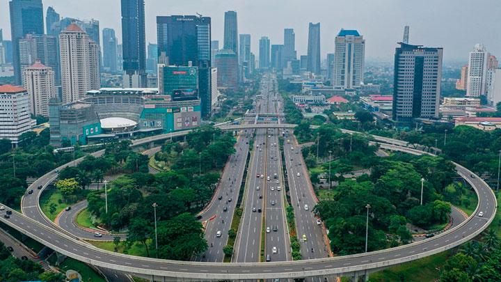
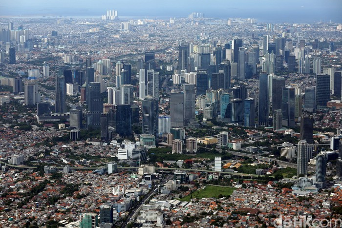
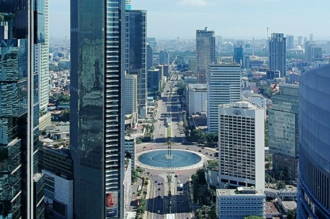

Sejarah

akarta pertama kali dikenal sebagai salah satu pelabuhan Kerajaan Sunda yang bernama Sunda Kalapa berlokasi di muara
Sungai Ciliwung. Ibu kota Kerajaan Sunda yang dikenal sebagai Dayeuh Pakuan Padjadjaran atau Pajajaran (sekarang Bogor)
dapat ditempuh dari pelabuhan Sunda Kalapa selama dua hari perjalanan. Menurut sumber Portugis, Sunda Kalapa merupakan
salah satu pelabuhan yang dimiliki Kerajaan Sunda selain pelabuhan Banten, Pontang, Cigede, Tamgara dan Cimanuk.
Sunda Kalapa yang dalam teks ini disebut Kalapa dianggap pelabuhan yang terpenting karena dapat ditempuh dari ibu kota
kerajaan yang disebut dengan nama Dayo (dalam bahasa Sunda modern: dayeuh yang berarti "ibu kota") dalam tempo dua hari.
Kerajaan Sunda sendiri merupakan kelanjutan dari Kerajaan Tarumanagara pada abad ke-5 sehingga pelabuhan ini diperkirakan
telah ada sejak abad ke-5 dan diperkirakan merupakan ibu kota Tarumanagara yang disebut Sundapura (bahasa Sanskerta yang
berarti "Kota Sunda").
Pada abad ke-12, pelabuhan ini dikenal sebagai pelabuhan lada yang sibuk. Kapal-kapal asing yang berasal dari Tiongkok,
Jepang, India Selatan, dan Timur Tengah sudah berlabuh di pelabuhan ini membawa barang-barang seperti porselen, kopi,
sutra, kain, wangi-wangian, kuda, anggur, dan zat warna untuk ditukar dengan rempah-rempah yang menjadi komoditas dagang
saat itu.
Geografis

Jakarta berlokasi di sebelah utara Pulau Jawa, di muara Ciliwung, Teluk Jakarta. Jakarta terletak di dataran rendah pada
ketinggian rata-rata 8 meter dpl. Hal ini mengakibatkan Jakarta sering dilanda banjir. Sebelah selatan Jakarta merupakan
daerah pegunungan dengan curah hujan tinggi. Jakarta dilewati oleh 13 sungai yang semuanya bermuara ke Teluk Jakarta.
Sungai yang terpenting ialah Ciliwung, yang membelah kota menjadi dua. Sebelah timur dan selatan Jakarta berbatasan
dengan provinsi Jawa Barat dan di sebelah barat berbatasan dengan provinsi Banten.
Kepulauan Seribu merupakan kabupaten administratif yang terletak di Teluk Jakarta. Sekitar 105 pulau terletak sejauh 45 km
(28 mil) sebelah utara kota.
Perekonomian

Jakarta merupakan kota dengan tingkat pertumbuhan ekonomi yang cukup pesat. Saat ini, lebih dari 70% uang negara beredar di
Jakarta. Perekonomian Jakarta terutama ditunjang oleh sektor perdagangan, jasa, properti, industri kreatif, dan keuangan.
Beberapa sentra perdagangan di Jakarta yang menjadi tempat perputaran uang cukup besar adalah kawasan Tanah Abang dan Glodok.
Kedua kawasan ini masing-masing menjadi pusat perdagangan tekstil serta dengan sirkulasi ke seluruh Indonesia. Bahkan untuk
barang tekstil dari Tanah Abang, banyak pula yang menjadi komoditas ekspor. Sedangkan untuk sektor keuangan, yang
memberikan kontribusi cukup besar terhadap perekonomian Jakarta adalah industri perbankan dan pasar modal. Untuk industri
pasar modal, pada bulan Mei 2013 Bursa Efek Indonesia tercatat sebagai bursa yang memberikan keuntungan terbesar, setelah
Bursa Efek Tokyo. Pada bulan yang sama, kapitalisasi pasar Bursa Efek Indonesia telah mencapai USD 510,98 miliar atau
nomor dua tertinggi di kawasan ASEAN.
Bisnis & Perdagangan
Pada tahun 2012, pendapatan per kapita masyarakat Jakarta sebesar Rp 110,46 juta per tahun (USD 12,270).Sedangkan untuk
kalangan menengah atas dengan penghasilan Rp 240,62 juta per tahun (USD 26,735), mencapai 20% dari jumlah penduduk.
Di sini juga bermukim lebih dari separuh orang-orang kaya di Indonesia dengan penghasilan minimal USD 100,000 per tahun.
Kekayaan mereka terutama ditopang oleh kenaikan harga saham serta properti yang cukup signifikan. Saat ini Jakarta
merupakan kota dengan tingkat pertumbuhan harga properti mewah yang tertinggi di dunia, yakni mencapai 38,1%. Selain
hunian mewah, pertumbuhan properti Jakarta juga ditopang oleh penjualan dan penyewaan ruang kantor. Pada periode 2009-2012,
pembangunan gedung-gedung pencakar langit (di atas 150 meter) di Jakarta mencapai 87,5%. Hal ini telah menempatkan Jakarta
sebagai salah satu kota dengan pertumbuhan pencakar langit tercepat di dunia. Pada tahun 2020, diperkirakan jumlah
pencakar langit di Jakarta akan mencapai 250 unit. Dan pada saat itu Jakarta telah memiliki gedung tertinggi di Asia
Tenggara dengan ketinggian mencapai 638 meter (The Signature Tower).